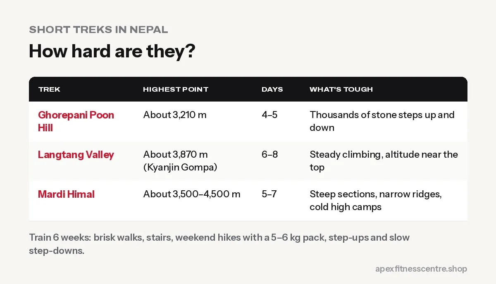

Short Treks in Nepal: How to Get Fit for Poon Hill, Langtang and Mardi Himal
Planning Poon Hill, Langtang or Mardi Himal? How fit you need to be, a 6-week training plan, packing and altitude tips for Nepal's popular short treks.

Not every trek in Nepal needs months of preparation. Popular shorter treks like Ghorepani Poon Hill, Langtang Valley and Mardi Himal are achievable for most healthy people with about 6 weeks of training. You’ll still face long days of up-and-down walking, so arriving fit makes them far more enjoyable.
How hard are these treks?
| Trek | Highest point (approx.) | Typical length | What’s tough |
|---|---|---|---|
| Ghorepani Poon Hill | Poon Hill viewpoint, about 3,210 m | 4–5 days | Thousands of stone steps up and down |
| Langtang Valley | Kyanjin Gompa about 3,870 m; optional viewpoints higher | 6–8 days | Steady climbing, altitude near the top |
| Mardi Himal | High Camp and viewpoints, around 3,500–4,500 m | 5–7 days | Steep sections, narrow ridges, colder high camps |
Exact heights, routes and durations vary with the itinerary you choose.

A 6-week training plan
| Weeks | Plan |
|---|---|
| 1–2 | 3 brisk walks of 45 minutes; 1 hilly walk of 2 hours; strength 2x a week |
| 3–4 | Stairs or incline treadmill 2x a week (30 min); weekend hike of 3–4 hours with a 5–6 kg pack |
| 5 | Back-to-back weekend hikes (Sat and Sun), lots of stairs and downhill |
| 6 | Easy week: short walks and stretching before you go |
Key exercises
Twice a week, 3 sets of 10 to 15:
- Step-ups with a backpack (the Poon Hill steps will thank you)
- Lunges
- Squats: see how to squat properly
- Slow step-downs for downhill strength
- Calf raises
- Planks
Altitude basics
Langtang and Mardi Himal go above 3,500 m, where some people feel the altitude.
- Don’t rush; follow an itinerary with sensible daily height gains.
- Drink water and avoid alcohol.
- Watch for symptoms: headache, nausea, dizziness, unusual tiredness.
- Descend if symptoms get worse, and seek help for severe symptoms.
For bigger treks, see our Everest Base Camp training plan and Annapurna Circuit fitness guide.
Packing tips for short treks
- Broken-in boots or trail shoes
- Layers: mornings and evenings get cold, even after a warm day
- Rain jacket, especially in shoulder seasons
- Trekking poles for the steps and descents
- Water bottle and purification
- Snacks: nuts, chocolate, dried fruit, chana
Check before you go
Check the current permit requirements, trail conditions and whether a licensed guide is required for your route and season. Rules have changed in recent years, so confirm with official sources or a registered trekking agency.
Stairs: the best trek training
Many short treks in Nepal, like Poon Hill, involve thousands of stone steps. Train for them directly:
- Stair climbing: start with 10–15 minutes and build up to 45–60 minutes
- Add a backpack: once stairs feel easy, carry 3–5 kg, then a little more
- Practise going down slowly: descents are often harder on knees than climbs
- Step-ups at the gym: 3 × 10 each leg, adding dumbbells over time
Food and water on the trail
- Drink regularly: small sips through the day, more in warm weather or at altitude
- Eat proper meals: dal bhat is great trekking food, with carbs for energy and dal for protein
- Carry snacks: nuts, dried fruit, biscuits, chocolate or energy bars
- Purify water: use purification tablets, a filter, or buy from refill stations where available
Frequently asked questions
Is Poon Hill trek easy?
It’s one of the easier treks, but the many stone steps make it tiring. With some stair training, most healthy people manage it well.
Which short trek is best for beginners?
Poon Hill is often recommended for first-timers because of its lower altitude and good facilities. Langtang Valley is also popular.
Do I need to go to the gym before a trek?
It helps, especially leg strength and stair work, but real hikes with a backpack are the most important training.
Can I get altitude sickness on short treks?
It’s possible above about 2,500 to 3,000 m. Going slowly and staying hydrated helps; descend if symptoms worsen.
Sources
- CDC Yellow Book: high-altitude travel and altitude illness (Centers for Disease Control and Prevention)
- WHO fact sheet: physical activity (World Health Organization)
General information, not medical advice. Check with a doctor before trekking at altitude if you have health conditions.
General information, not medical advice. Ask a doctor if you have a health condition. Results vary from person to person.
Comments
Loading comments…